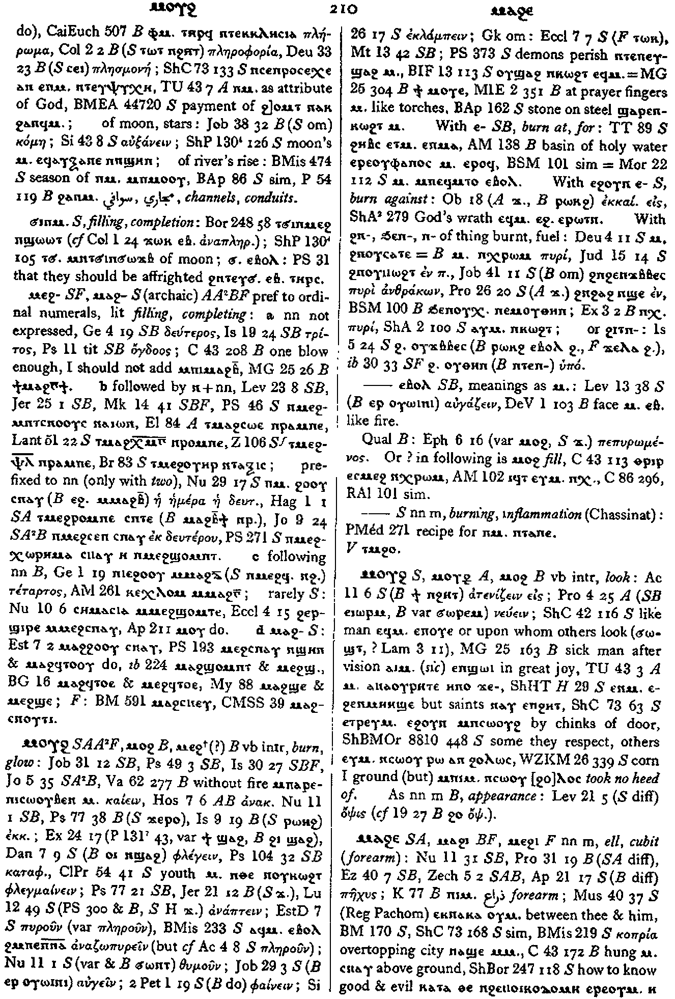

(verb)
intr: burn, glow [καιειν, φλεγειν, αναπτειν, φαινειν]
qual: [πεπυρωμενοσ]
qual: [πεπυρωμενοσ]
(S, A, sA, F)
ⲙⲟⲩϩ
(B) ⲙⲟϩ
(B) ⲙⲉϩ+(?)
(B) ⲙⲟϩ
(B) ⲙⲉϩ+(?)
| intr :5658 | Crum: 210a | ||||||||
| (S, B) ⲉ- (c) | burn at, for5659 | Crum: 210b | |||||||
| (S) ⲉϩⲟⲩⲛ ⲉ- (c) | burn against5660 | ||||||||
| ϩⲛ-, ϧⲉⲛ-, ⲛ- (c) | of thing burnt, fuel5661 | ||||||||
| {or} ϩⲓⲧⲛ- (c) | 5662 | ||||||||
| (S, B) ― ⲉⲃⲟⲗ | meaning as ⲙ. [αυγαζειν]1080 | ||||||||
| (S) ― (ⲡ) | (noun male)
burning, inflammation1081 |
||||||||
See also:
| view | (S, B, F) ⲗⲱⲃϣ | (verb) intr:
― be hot, glow [πυρουσθαι] ― often in martyrdoms ⲗ.+ ⲛⲕⲱϩⲧ S, ⲛⲭⲣⲱⲙ B, glowing with fire, red hot tr: S,B, burn, heat946 |
| view | (S, A, sA) ϫⲉⲣⲟ (S) ϫⲉⲣⲱ (Sf, F) ϫⲉⲗⲁ (B) ϭⲉⲣⲟ | (verb) intr: blaze, burn
[καιειν, αναπτειν]
tr: kindle [καιειν, ανακαιειν]117 |
| view | (S, A, sA, B) ⲣⲱⲕϩ (F) ⲗⲱⲕϩ (NH) ⲣⲱϩⲕ | (verb) intr: burn
[καιειν, πυρουσθαι]
tr: [καιειν, φλεγειν]136 |
| view | (S) ⲥⲁϩⲧⲉ (B) ⲥⲁϩϯ (F) ⲥⲉϩϯ | (verb) intr: kindle fire,
heat thereby [μαγειρισσα
γινεσθαι, εξημα ποιειν]
tr: S,B, kindle, burn [καιειν]1545 |
| view | (S, A) ⲧⲙϩⲟ (B) ⲧⲉⲙϩⲟ, ⲧⲉⲙⲙϩⲟ, ⲧϩⲉⲙⲙⲟ, ⲧⲉⲙⲙⲟ, ⲧⲙⲟ | (verb) tr: set on fire,
kindle [καιειν, φλεγειν]
intr: blaze, burn1603 |
| view | (S) ϫⲟϥϫϥ, ϫⲟⲃϫⲃ (S, B) ϫⲟϥϫⲉϥ | (verb) intr: burn, cook
[κατακαιειν, περιφλεγειν]
qual: (mostly B) [οπτοσ] tr: [οπταν, πεσσειν]719 |
| view | (S, A, sA, B) ϫⲟⲩϥ (S) ϫⲟⲩⲃ, ϫⲛⲟⲩϥ (S, B) ϫⲱϥ | (verb) intr: burn, scorch
[κατακαιεσθαι]
qual: burnt, burning | be sharp, bitter2483 |
| view | (S) ⲟⲩⲱϣⲉ, ⲟⲩⲱⲱϣⲉ | (verb) intr: consume by burning [καταναλισκειν] tr:1758 |
Crum: 210

210
Dawoud: 178b-179a

178

179